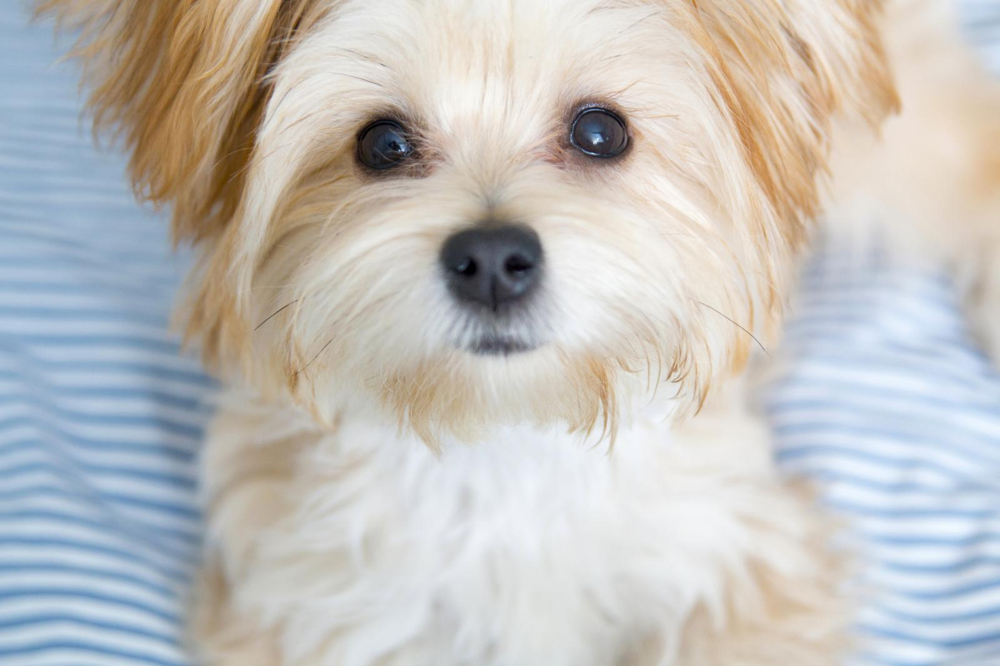
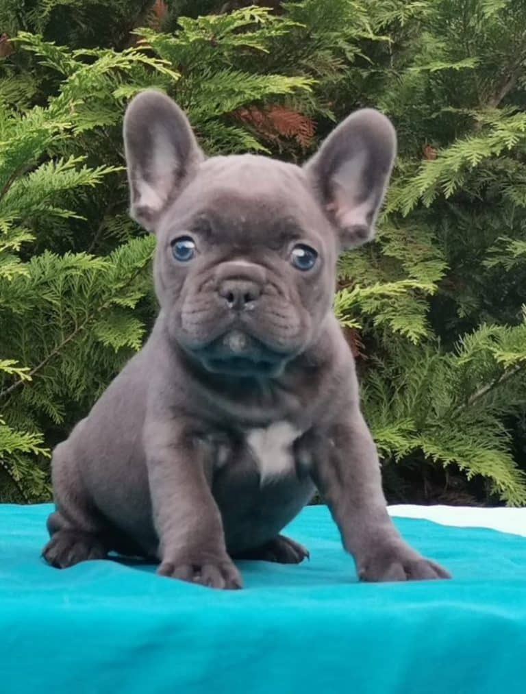

Everybody has different interests, that why there is a specific
breed for everyone
1. Morkie

A personal favorite of mine because i do own one, the morkie is
a smaller breed that loves to snuggle up and give love, But beware
although they are small the morkie is one of the most energetic
breeds.
2. Golden retriever

Golden retrievers are for people who love a loyal dog and also
one on the bigger side while not being gigantic. they are truly a
mans best friend as they are very loyal and usually can walk with
you without needing a leash.
Beatrice Milek [CC BY-SA
4.0],
3. French Bulldog

the french bulldog is a very cute dog that does not require much
exercise. however, there is a high maintenence when it come to
sanitation for they have many folds that need to be cleaned and
require lotions for there nose for they dry out.
4. German Shepherds

German shepherds are a very loyal breed that are great for
people who like the outdoors. They will stick right by your side
and are very hardy for different climates and terrains; a real
outdoorsmen's dog, which is why it makes number four on the
list.